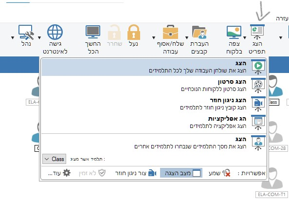
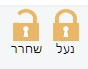
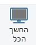
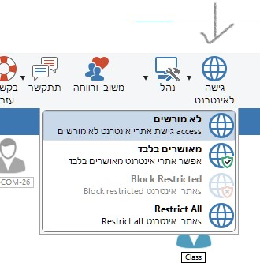
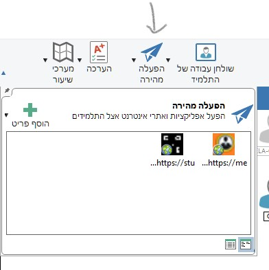
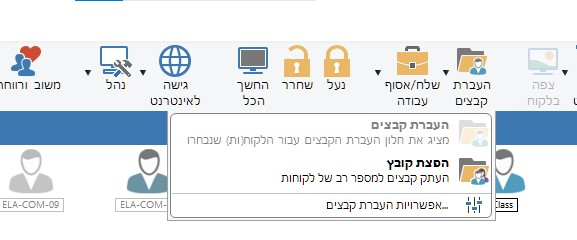
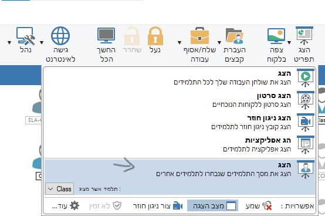

שלב 0: פתיחת התוכנה והמסך הראשי
0.1 הפעלה ובחירת ממשק
1. לחץ לחיצה כפולה על האייקון הזה:
2. בחירת רמת הכלים: בחר את האפשרות האמצעית (עיקרית) להצגת הכלים הרלוונטיים ביותר.
0.2 הכרת המסך הראשי וסרגל הכלים
לאחר הבחירה, ייפתח המסך הראשי של NetSupport. רוב הכלים החשובים מרוכזים בסרגל הכלים העליון. כל אחד מהכפתורים שלהלן יכוסה במדריך זה:
(הריבוע האדום מסביב לתמונה נועד להדגיש את סרגל הכלים העיקרי)
1. ניטור: צפייה בכל התלמידים בו-זמנית (המסך הראשי)
המטרה: לדעת במבט חטוף שכל התלמידים מרוכזים ועובדים במה שצריך.
-
חזרה לתצוגת כיתה: אם עברת לצפות בתלמיד בודד (לחיצה כפולה), כדי לחזור לתצוגת הניטור של כל הכיתה, לחץ על סמליל הבית/ריבוע (כפי שמודגם בתמונה) בבר הצדדי הימני. פעולה זו מחזירה אותך למסך הראשי המציג את כל התלמידים.
- ניטור: במסך הראשי, התבונן בתצוגת התמונות הממוזערות ("Thumbnail View"). כל תמונה קטנה מציגה את מה שקורה בזמן אמת על מחשב של תלמיד.
- לצפייה מקרוב: אם תלמיד נראה מוסח, לחץ לחיצה כפולה על התמונה שלו. המסך שלו ייפתח בגודל מלא ותוכל לראות בדיוק מה קורה.
2. הדגמה: הצג את המסך שלך
המטרה: להדגים פעולה או להציג תוכן לכל הכיתה בו-זמנית.
- הכן את התוכן: ודא שמה שאתה רוצה להראות מופיע על מסך המורה שלך.
-
התחל שידור: חפש בסרגל הכלים את הכפתור שכתוב עליו "Show" או "הצג מסך המורה" (לרוב עם סמל של מקרן/מסך). לחץ עליו.

- הפסק: לאחר סיום ההדגמה, לחץ שוב על אותו כפתור כדי להחזיר לתלמידים שליטה על המחשבים שלהם.
3. משמעת: נעילת מסכי התלמידים
המטרה: לקבל תשומת לב מלאה ומיידית מהכיתה.
-
לחץ על מנעול: חפש בסרגל הכלים כפתור עם סמל של מנעול או הכיתוב "Lock" (נעילה) או "Blank Screen".
 
- מה קורה: מסכי התלמידים יחשיכו או יציגו הודעה, והמקלדת והעכבר שלהם יינעלו.
- שחרור: כדי לפתוח את המסכים ולחזור לעבודה, לחץ שוב על אותו כפתור המנעול.
4. פוקוס: הגבלת יישומים
המטרה: למנוע הפעלת תוכנות או יישומים מסיחים (כגון משחקים) ולמקד את התלמידים בכלי העבודה הנדרשים.
4.1 הגדרת רשימות האפליקציות המורשות והאסורות
-
פתיחת חלון ההגדרות: חפש כפתור עם סמל של חלון תוכנה או "Application Control" (בקרת יישומים), ולחץ עליו כדי להגיע לתפריט ההגדרות.
-
הוספת יישום לרשימה:
- Allowed Apps (מורשות): רשימת יישומים שמותר להפעיל בלבד.
- Disallowed Apps (אסורות): רשימת יישומים שאסור להפעיל.
**שימו לב:** יש להזין את שם הקובץ הרץ המדויק (למשל: `PowerPoint.exe`).
4.2 הפעלת האכיפה (Apply Policy)
- הפעלת הבקרה: חפש בסרגל הכלים את כפתור "Application Control" (בקרת יישומים).
- בחירת מדיניות: לחץ על הכפתור ובחר את מדיניות האכיפה הרצויה (למשל, לחסום את הרשימה האסורה או לאפשר רק את המורשית).
- איפוס: בסיום המשימה, לחץ שוב על כפתור הבקרה כדי לכבות את ההגבלה ולחזור למצב רגיל.
5. שליטה ממוקדת: הגדרת והפעלת אתרים מותרים/אסורים
המטרה: לשלוט בגלישת האינטרנט של התלמידים.
5.1 הגדרת רשימות האתרים (צהוב/אדום)
-
פתיחת חלון ההגדרות: לחץ על סמל הגלובוס בבר הצדדי הימני של המסך.
-
הוספת אתר: בחר את הלשונית הרצויה (צהובה/אדומה), לחץ לחיצה ימנית בתוך אזור הרשימה, ובחר "הוסף ערך חדש" כדי להכניס את כתובת ה-URL.
5.2 הפעלת ההגבלה (Apply Policy)
-
בחירת כפתור הפעלה: חפש בסרגל הכלים הראשי כפתור עם סמל של גלובוס נעול/מפתח ("Internet Control" או "בקרת אינטרנט").

-
אפשרויות ההגבלה: לחץ על כפתור זה כדי לבחור את רמת האכיפה:
- Allow Restricted: מאפשר גלישה רק לאתרים ברשימה הצהובה (כל השאר אסורים). זוהי ההגבלה המחמירה ביותר.
- Block Restricted: חוסם רק את האתרים ברשימה האדומה (כל השאר מותרים).
- Restrict All: חוסם לחלוטין את כל הגלישה (ללא קשר לרשימות).
- No Internet: מכבה את פקדי האינטרנט ומחזיר למצב רגיל.
- סיום ההגבלה: כדי לשחרר את הגלישה, בחר שוב ב- No Internet.
6. תקשורת: צ'אט ושליחת הודעות מתפריט התקשורת
המטרה: לתקשר עם תלמיד ספציפי או עם כל הכיתה ללא צורך לדבר בקול רם, באמצעות הכלים הממוקדים.
-
כפתור התקשורת: חפש בסרגל הכלים את כפתור "Communicate" (תקשורת), לרוב עם סמל של בועת דיבור.
- הודעת צ'אט (Chat): האפשרות הראשונה. ייפתח חלון צ'אט (שיחה פנים אל פנים) עם תלמיד ספציפי או עם קבוצה שבחרת.
- שליחת הודעה (Send Message): זוהי הודעה קצרה, חד-כיוונית. הקלד את ההודעה והיא תקפוץ על המסך של התלמידים למספר שניות. (למשל: "יש עוד 5 דקות לסיום המשימה").
- שליחת הודעה שמורה (Send Stored Message): אם יש לך הודעות שאתה שולח הרבה (למשל: "צאו להפסקה"), תוכל לשמור אותן מראש ולשלוח בלחיצה אחת.
- הודעה דו-כיוונית (Two-Way Message): האפשרות מאפשרת לך לשלוח הודעה ארוכה יותר הדורשת אישור מהתלמיד (כמו: "האם סיימת את העבודה?").
6.1 מעקב אחר כל הודעות התלמידים (Monitoring Chats)
המטרה: לוודא שהתלמידים אינם מתכתבים בנושאים לא רלוונטיים או לא נאותים בזמן השיעור, ולאפשר תיעוד מלא של התקשורת ביניהם.
- פתיחת חלון ההגדרות: חפש את כפתור "Communicate" (תקשורת) בסרגל הכלים.
-
בחירת מעקב: בתפריט הנפתח, בחר באפשרות "Monitor All Student Chats" (ניטור כל הצ'אטים של התלמידים).
- התוצאה: חלון חדש ייפתח במסך המורה, המציג בזמן אמת את כל השיחות המתנהלות בין כל התלמידים בכיתה, כולל שיחות צ'אט בתוך NetSupport או כל כלי צ'אט מופעל אחר.
- תיעוד: NetSupport שומר תיעוד מלא של שיחות אלו.
7. שליטה מרחוק: הרצת אפליקציה מהירה (Launch Application)
המטרה: לפתוח תוכנה ספציפית על כל מחשבי התלמידים בו-זמנית, ללא צורך שהם יחפשו אותה.
-
כפתור ההרצה: חפש בסרגל הכלים את כפתור "Launch Application" (הרצת אפליקציה), לרוב עם סמל של רקטה/שיגור.

- הוספת יישום: אם היישום אינו מופיע ברשימה, לחץ על "הוסף פריט" כדי להכניס את שם הקובץ הרץ (למשל: `notepad.exe` או `chrome.exe`) או הנתיב המלא שלו.
- הפעלת היישום: בחר את היישום מהרשימה ולחץ על כפתור ההפעלה בתפריט. היישום יושק אוטומטית במחשבי התלמידים שנבחרו.
8. פתיחה מהירה: שליחת אתר אינטרנט
המטרה: להבטיח שכל התלמידים נמצאים באותו עמוד אינטרנט בדיוק, באופן מיידי.
- כפתור ההפעלה: חפש בסרגל הכלים את הכפתור "Launch Website" או "Open URL" (לרוב עם סמל של חץ או קישור).
- הכנס כתובת: הקלד או הדבק את כתובת האתר המלאה (למשל: `https://www.google.com`).
- שלח: לחץ על 'שלח' או 'הרץ'. הדפדפן ייפתח אוטומטית אצל התלמידים בעמוד ששלחת.
9. ניהול חשמל: כיבוי והדלקה מרחוק
המטרה: לנהל את המחשבים בכיתה לפני השיעור ובסופו, כדי לחסוך זמן וחשמל.
-
כפתור ההפעלה: חפש בסרגל הכלים את כפתור "Power" (חשמל/כוח), לרוב עם סמל של מתג או כפתור הדלקה.
- כיבוי (Shutdown): בחר את התלמידים הרצויים (או את כל הכיתה), לחץ על כפתור Power ובחר באפשרות "כבה" (Shutdown).
- הדלקה (Wake-Up): בחר את המחשבים הכבויים, לחץ על Power ובחר באפשרות "הפעל" (Wake-Up) כדי לשלוח פקודת הדלקה מרחוק (דורש הגדרה תקינה ברמת הרשת).
- כלי עזר נוספים: ניתן גם להשתמש בתפריט זה כדי לבצע Restart (אתחול) או Logoff (יציאה מהמשתמש).
10. שיתוף: העברת קבצים (שליחה ואיסוף)
המטרה: לשלוח חומרים נדרשים במהירות, ולקבל בחזרה את עבודות התלמידים בצורה מסודרת.
-
כפתור העברה: חפש בסרגל הכלים את כפתור "File Transfer" (העברת קבצים), לרוב עם סמל של תיקייה או מסמכים.

- לשליחת קבצים (Delivery): גרור את הקבצים הדרושים מחלון המורה אל התיקייה הרצויה במחשבים של התלמידים.
- לאיסוף עבודות (Collection): סמן את קובץ העבודה במחשב של התלמיד, ולחץ על כפתור "Get" או גרור אותו בחזרה למחשב המורה.
11. שיתוף עבודות: הצגת מסך תלמיד לכל הכיתה
המטרה: לאפשר לתלמיד להדגים עבודה, פתרון מוצלח או שאלה לכל הכיתה (שידור הפוך).
- איתור התלמיד: ודא שהתלמיד מציג את העבודה שברצונך לשתף בתצוגה הממוזערת.
-
שידור: לחץ לחיצה ימנית על התמונה הממוזערת של התלמיד, ובחר "Show Student Screen" (הצג מסך תלמיד) - או השתמש בכפתור "Show" הראשי ובחר את האפשרות המתאימה:

- תוצאה: המסך של התלמיד ישודר אוטומטית למחשב המורה (ומשם למקרן) וכן לכל שאר מסכי התלמידים בכיתה.
- סיום: לחץ שוב על כפתור השידור (או 'Stop') כדי להפסיק את ההצגה ולשחרר את השליטה.
12. הערכה: שליחת מבחנים מובנים (Test Console)
המטרה: להעביר מבחנים מוכנים מראש, לקבל תשובות מיידיות ולצפות בתוצאות בזמן אמת.
-
כפתור המבחנים: חפש בסרגל הכלים את כפתור "Test" (מבחן), לרוב עם סמל של ספר עם וי.
- בחירת המבחן: לאחר הלחיצה, ייפתח חלון מנהל המבחנים. בחר מבחן מוכן מראש מהרשימה או צור מבחן חדש.
- העברת המבחן: בחר את התלמידים הרצויים ולחץ על כפתור "Deploy Test" (שלח מבחן).
- צפייה בתוצאות: תוכל לראות על מסך המורה את ההתקדמות והציונים של התלמידים בזמן שהם עונים, כולל ציון ממוצע כיתתי.
13. ניהול סאונד: השתקת/הגברת שמע מרחוק
המטרה: להשתיק את כל המחשבים (למשמעת), או לחלופין, לוודא שתלמידים יכולים לשמוע תוכן שאתה מציג.
-
כפתור השמע: חפש בבר הצדדי הימני את סמל הרמקול/אוזניות.
- השתקה מיידית: לחץ על סמל הרמקול. הפעולה הפשוטה ביותר היא לחיצה כפולה על האייקון, אשר תשתיק באופן מיידי את כל המחשבים שנבחרו.
-
בקרת עוצמה מדויקת: בלחיצה בודדת על האייקון, ייפתח תפריט המאפשר לך:
- Set Volume: להגדיר עוצמת קול מדויקת (ב-%).
- Mute: להשתיק (זהה ללחיצה כפולה).
- Unmute: לבטל את ההשתקה.
- שימוש: מומלץ להשתיק את כל הכיתה לפני הדגמה (סעיף 2) כדי למנוע צלילי רקע והסחות דעת.
14. בקרת הדפסות: שליטה בהדפסה (Print Control)
המטרה: למנוע הדפסות לא נחוצות או בזבזניות ולנהל את השימוש במדפסת במהלך השיעור.
- כפתור בקרת הדפסה: חפש בסרגל הכלים הראשי כפתור עם סמל של מדפסת (Print Control).
-
פתיחת תפריט השליטה: לחץ על הכפתור כדי לגשת לתפריט ההגדרות. התפריט מאפשר שליטה מלאה:
-
אפשרויות בקרה עיקריות (בהתאם לתפריט):
- Restrict Printing: חסימת כל ההדפסות של התלמידים שנבחרו.
- Allow Printing: אישור הדפסה (מצב רגיל).
- Set Print Limits: הגדרת מגבלות של מספר העותקים, סוגי המדפסות או גודל הקובץ.
- איפוס: בסיום השיעור, הקפד להחזיר את הבקרה למצב Allow Printing או לכבות את ההגבלה.
15. ניהול כיתה: סידור התלמידים לפי מפת ישיבה (Class Layout)
המטרה: ליצור תצוגה במסך המורה שתואמת את סדר הישיבה הפיזי של התלמידים בכיתה, לניטור יעיל יותר.
- ודא שאתה במסך הראשי: ודא שאתה נמצא בתצוגת התמונות הממוזערות של כל התלמידים (אם לא, לחץ על סמליל הבית בבר הצדדי, כפי שהוסבר בסעיף 1).
-
בחירת מצב עריכת פריסה: חפש בסרגל הכלים העליון כפתור המאפשר שינוי תצוגה או כפתור המציין "Layout View" (מצב פריסה).
- סידור התלמידים (גרירה): גרור את התמונות הממוזערות של התלמידים למיקום הרצוי על המסך. האייקון של לוח מחיק (Whiteboard) יכול לשמש כנקודת יחוס לקדמת הכיתה.
- שמירת הפריסה: לאחר שסיימת לסדר את כל התלמידים, לחץ על כפתור "Save Layout" (שמור פריסה) או על כפתור דומה בבר הכלים כדי לשמור את הסידור לשימוש חוזר.